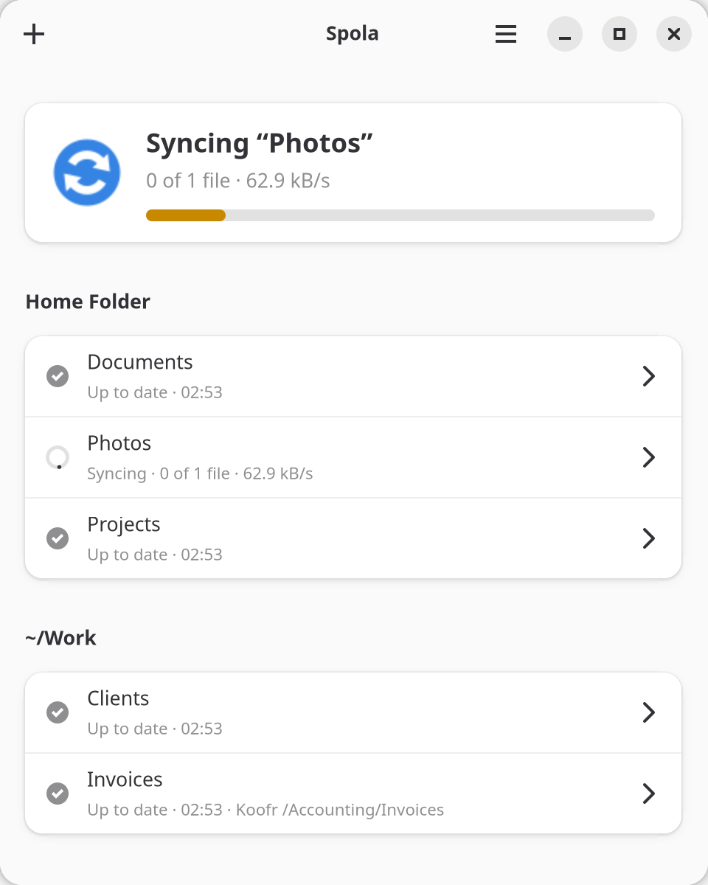
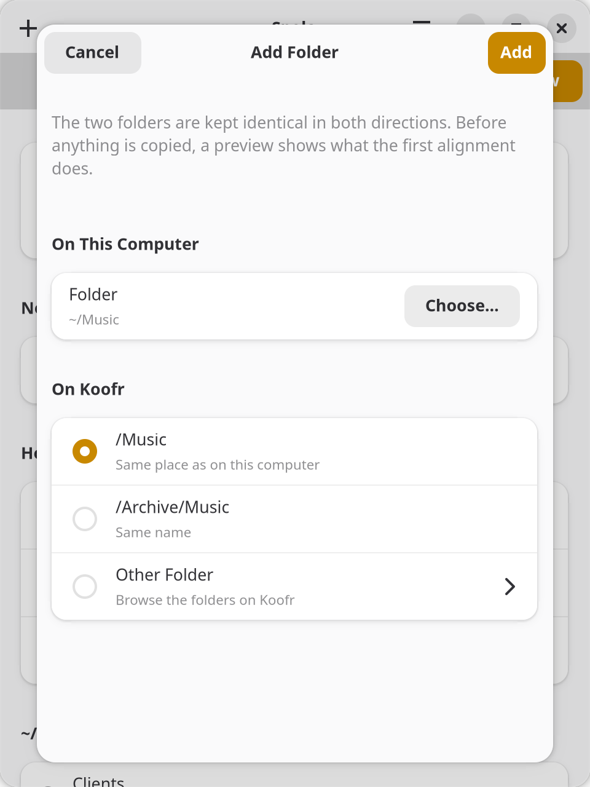
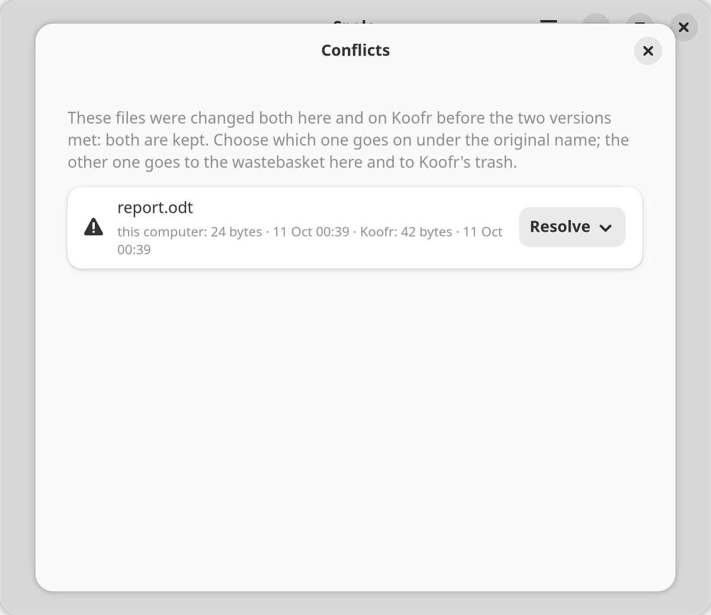
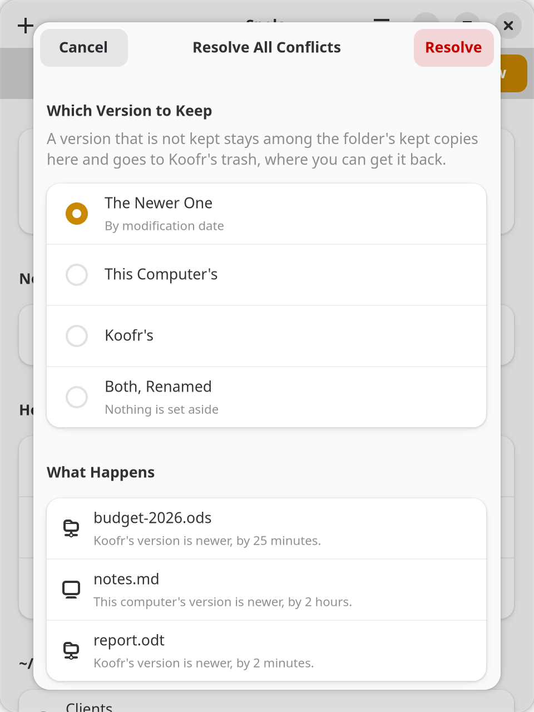
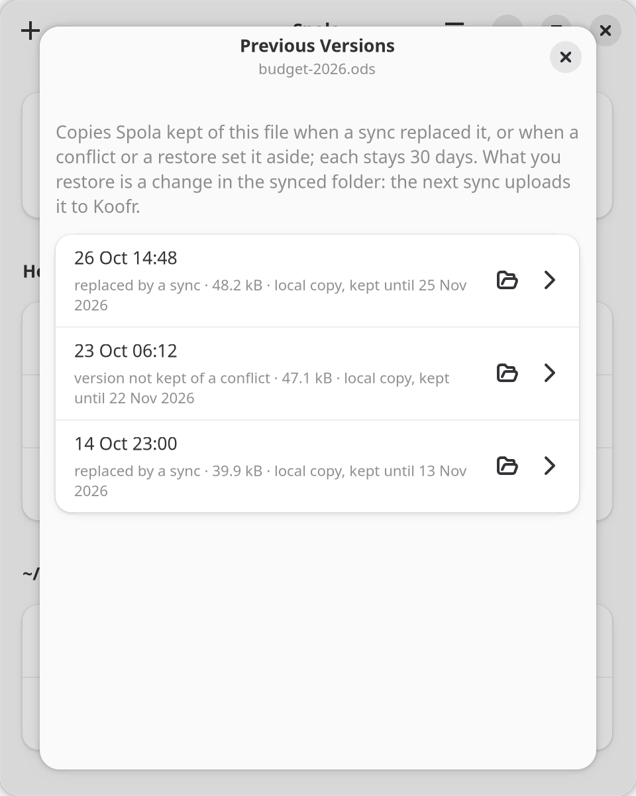
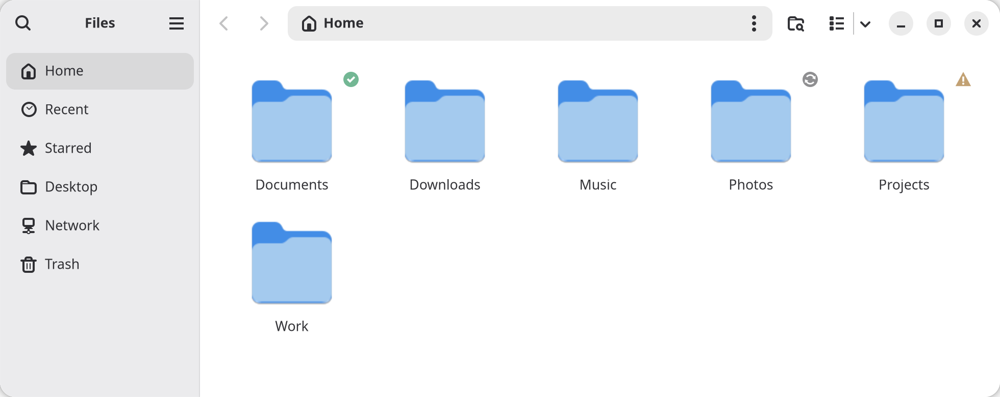
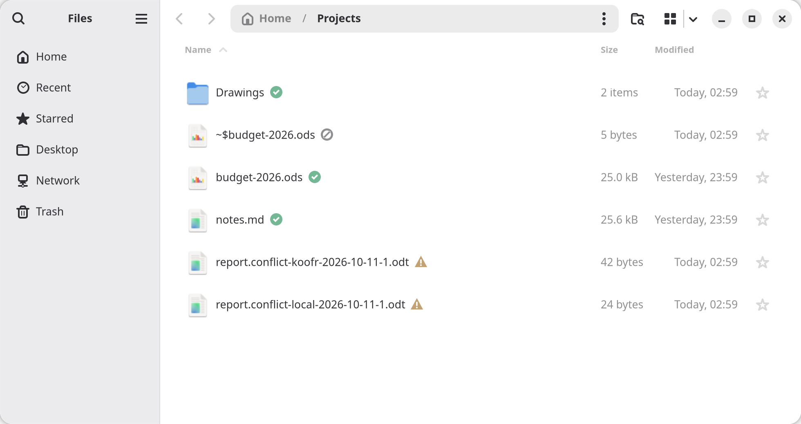
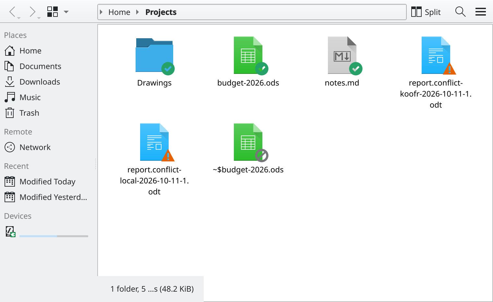
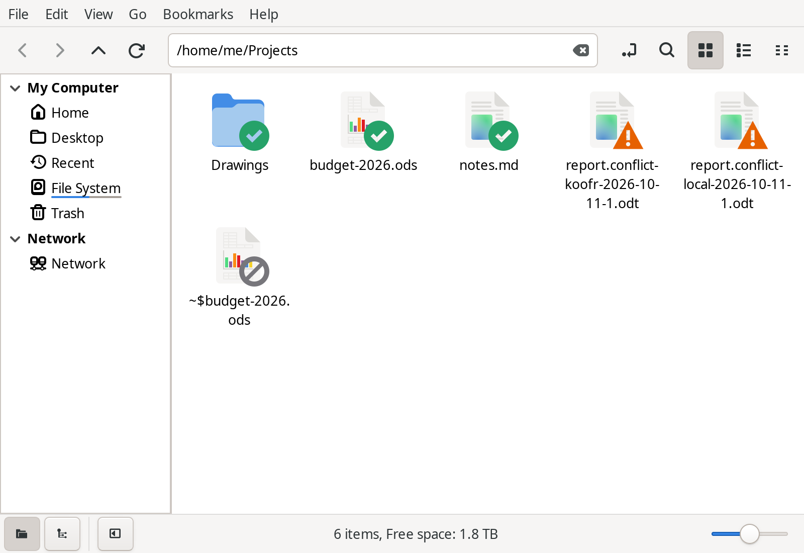

Spola
Keep your folders in sync with Koofr, on Linux and on Windows.
Koofr's own desktop client works, but on my Linux desktop it never felt at home: an old GTK 3 window, nothing in Files, and a tray icon that redraws itself every second, which broke the tray of the shell I use. So I wrote Spola. It keeps folders on your computer and folders on Koofr identical, in both directions, in the background, and it is careful with your files above everything else. It was born on Linux, and the same app runs on Windows too.
A spola is the shuttle of a loom, the piece that carries the thread from one side to the other. In Italian, fare la spola means going back and forth.
On Linux, from a terminal: flatpak install https://daniel-g-carrasco.github.io/spola/spola.flatpakref.
It comes from its own signed repository and updates arrive through your software centre (GNOME Software, KDE Discover), like any other app.
On Margine OS: ujust install-spola.
On Windows, the latest release has an installer (spola-setup-…-windows-x64.exe, for your user
only, no administrator needed) and a portable zip. Spola offers its own updates and installs only one signed
with its key. The installer has no Windows certificate yet, so SmartScreen warns the first time:
More info, then Run anyway.

How it works
You sign in with your Koofr e-mail and an app password (Koofr settings, Passwords: Koofr does not accept your main password from other apps), then you pick folders, each one paired with a folder on Koofr. Spola sits in the tray. Changes you make are picked up as they happen; changes made from your other devices show up within a minute, and once an hour Spola checks everything anyway.
When you add a folder, Spola looks on Koofr for its match: the same place as in your home folder, or a folder with the same name. If that is not it, you browse your Koofr folders one level at a time, or make a new one. Folders that are already synced are greyed out, so two pairs never fight over the same files.

The tray icon is in the panel's own colour, like its neighbours: its shape says what is going on (arrows while syncing, a mark when something needs you, a cross on errors). Hover it to see what is syncing and how far along it is; its menu starts with the same line, then lists the files being transferred and the last ones synced, and a click shows the file in Files.
I did not write a sync engine. Every sync is an rclone bisync run: rclone
is well tested on thousands of machines, and I would rather put guards around it than reinvent it.
Careful with your files
- A preview before every big step. The first sync of a folder, a repair, and any sync stopped by a safety check show you what would happen, as a tree of folders, with how much goes each way and whether Koofr has room for it. Nothing runs until you say so, and a confirmation allows what the preview showed, no more. The other folders keep syncing meanwhile, and you can close the preview and come back to it.
- No surprise deletions. A sync that would delete more than 10% of a folder, or more than about 500 files, stops and waits for you. So does one that would upload a whole library changed at once, the way a restored snapshot looks.
- Copies of what a sync replaces. Files a sync replaces or deletes on your computer are kept for 30 days, and come back from Previous Versions. On Koofr, Koofr keeps its own previous versions and its trash.
- A move stays a move. Rename a file or move it to another folder and Spola moves it the same way on the other side (on Koofr, on the server) instead of deleting it and copying it again. A big reorganisation still stops and asks first, and lists the moves as moves.
- Conflicts keep both versions. When a file changed on both sides, you get two copies with readable names and a window to pick the one that stays: one by one, or all together with a rule (the newer one, this computer's, Koofr's, both), after seeing what happens to each file. If you prefer, a folder's rule does it on its own after each sync. The version not kept goes among the kept copies, never away for good.
- An unplugged drive is not an empty folder. If the folder Spola knows is gone or replaced, the pair stops before rclone even starts. A folder deleted on Koofr is not a reason to empty yours: Spola tells you and offers to bring it back from Koofr's trash.
- Check, don't trust. Verify compares every file here and on Koofr by size and checksum, changing nothing, and runs on its own after every confirmed alignment.
- No half-done work. Files still being written wait before they are synced, the computer stays awake while a sync runs, and a sync that would fill the disk does not start.
- Names Koofr refuses (emoji, names that differ only in case) are left out and shown to you while the rest keeps syncing, and Spola offers to rename them to names Koofr accepts.
- Your app password stays in the keyring and never shows up in a command line.


Previous versions
Right-click a file in your file manager and choose Previous Versions…: every copy Spola kept of it, with its date, why it was kept and when it expires. Open one read-only, put it back next to the file as a copy, or let it replace the file, which is kept first, so even that can be undone. On a folder, Recently Deleted Files… lists what was deleted in it, the copies kept here and what sits in Koofr's trash for that folder. Spola tells you before every restore that the next sync uploads it.

In your file manager
Turn it on in the preferences and your file manager shows an emblem on every synced file and folder: up to date, syncing, waiting, error, conflict, left out. Right-click gives you Sync Now, Open on Koofr, the share link, and the previous versions. The extension only reads from a cache, so the file manager stays as fast as it was.
Files (Nautilus), Nemo and Caja get both, through their Python bindings (nautilus-python,
nemo-python, python3-caja; Margine OS has the first). Dolphin gets the Koofr menu
right away, and the emblems with a small plugin you build once on your system:
three commands.
Thunar gets the menu only, because it has no way for an extension to draw emblems.




On Windows
The same window, the same previews and the same safety checks. The status sits in the notification area, File Explorer shows each synced folder's status the way cloud apps do, each file turning green once copied, and its right-click menu gives Open on Koofr, the share link, Previous Versions… and Recently Deleted Files…. A sleep that comes in the middle of a sync stops it gracefully, and it goes on after waking.
Coming from Koofr Desktop
Spola can take your Koofr Desktop folders over, on Linux and on Windows: Import from Koofr Desktop
in the menu, spola import-koofr-desktop, or ujust install-spola migrate on Margine OS.
Spola does not sync while Koofr Desktop runs on the same computer or is set to start at login: two sync engines on the same folders is the quickest way to lose
files, and I learned it the hard way. Koofr Desktop on your other computers is fine. In my case the folders were already identical on both sides
and the first sync of each moved nothing, but you see that in the preview before anything happens.
On Noctalia
If your desktop is the Noctalia shell, a plugin puts Spola in the bar: a cloud with the sync status, a panel with every folder and its progress, a tile to pause and resume everything.
Where it stands
This is version 0.3. I use it every day on my own machines, with 16 folders and a few hundred gigabytes, and it replaced Koofr Desktop there. It is still young: what changes from one version to the next is in the changelog, and if something looks wrong, please open an issue. It speaks English and Italian.